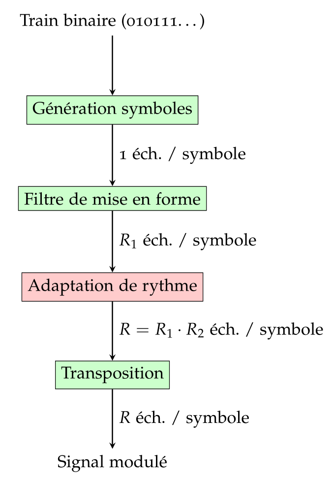

Création d'un modulateur numérique
Le bloc modulateur permet de convertir un train binaire en un signal bande de base (ou déjà transposé à une fréquence intermédiaire), mis en forme et sur-échantillonné (de manière à être prêt à être transmis à un ADC).
La structure de paramètrage (ModConfig) spécifie la forme d'onde (type de modulation, filtre de mise en forme), ainsi que les paramètres de fréquence, notamment :
- La fréquence symbole \(f_{symb}\) (
fsymb),
- La fréquence d'échantillonnage souhaitée en sortie \(f_e\) (
fe),
- La fréquence intermédiaire souhaitée en sortie \(f_i\) (
fi).
Le facteur de sur-échantillonnage global vaut donc :
\[ R = \frac{f_e}{f_{symb}} \]
Afin de réduire la complexité de calcul, ce facteur global est décomposé en deux parties :
\[ R = R_1 \cdot R_2 \]
Le facteur \(R_1\) sera appliqué au moment de l'application du filtre de mise en forme, et le facteur \(R_2\) par un interpolateur final.
Les différentes étapes sont les suivantes :
- Génération des symboles : les bits d'entrées sont regroupés par groupes de \(k\) bits ( \(k\) étant le nombre de bits par symbole de la forme d'onde configurée), et chaque groupe de \(k\) bits est transformé en un symbole de la constellation.
- Filtre de mise en forme et sur-échantillonnage : le filtre est implémenté sous forme polyphase et permet de passer de 1 échantillon / symbole à \(R_1\) échantillons / symbole :
\[ x_n = \sum_k h_k \cdot u_{(n-k)/R_1} \]
- Adaptation de rythme : cet étage d'interpolation permet de passer de \(R_1\) à \(R=R_1\cdot R_2\) échantillons / symbole.
- Transposition : cet étage (actif uniquement si le paramètre \(f_i\) est non nul) permet de transposer le signal bande de base vers la fréquence intermédiaire \(f_i\) :
\[ y_k = e^{2\pi\mathbf{i} k f_i / f_e} \cdot x_k \]
Par ailleurs, si le paramètre sortie_réelle est actif, la partie imaginaire du résultat est mise à zéro :
\[ z_k = \mathcal{R}(y_k) \]
- Avertissement
- Attention : L'étage d'adaptation de rythme est pour l'instant désactivé, si bien que le changement de rythme est entièrement à la charge du filtre de mise en forme (implémentation RIF polyphase), ce qui peut être assez coûteux en charge de calcul si \(R\) (facteur global de rééchantillonnage) est élevé.
- Schéma-bloc
- 
- Exemple 1 : modulation BPSK (avec filtre NRZ)
ModConfig config;
config.fe = 100e3;
config.fi = 0;
config.fsymb = 10e3;
auto bs = randstream(64);
ArrayXcf x = mod->step(bs);
Figures f;
f.subplot().plot(bs.array(), "hb", "Train binaire");
f.subplot().plot(x.real(), "b-", "Signal modulé BPSK (NRZ)");

Exemples de modulation BPSK
- Exemple 2 : modulation QPSK (avec filtre SRRC)
ModConfig config;
config.fe = 100e3;
config.fi = 0;
config.fsymb = 10e3;
auto bs = randstream(64);
ArrayXcf x = mod->step(bs);
Figures f;
f.subplot().plot(bs.array(), "hb", "Train binaire");
f.subplot().plot(x, "", "Signal modulé QPSK (SRRC)");

Exemples de modulation QPSK
- Voir également
- démodulateur_création()